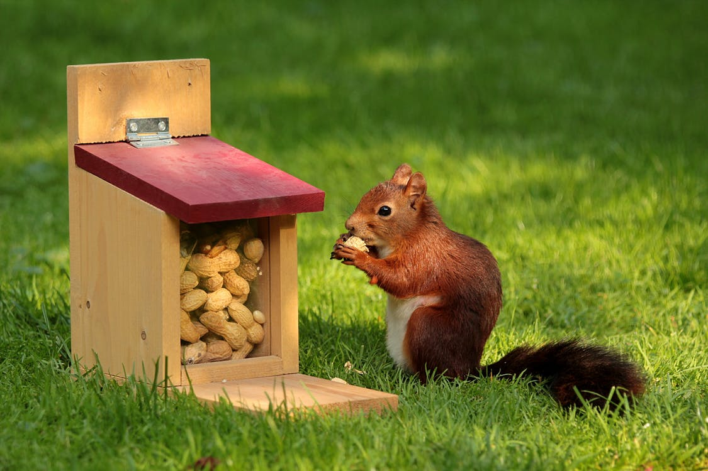

家养的雪地松鼠一般以壳斗科植物的种子为食，但在大自然中也会食用相当多的昆虫，因此最好也喂食些动物性的食物。如果以人工饲料为主食，还应另外补充苹果等食物。夏秋两季也可以饲喂一点瓜果之类的食物，如黄瓜、西红柿和西瓜等。
饲喂雪地松鼠的饲料有混合饲料、粗饲料和青绿多汁饲料。
混合饲料：般由大麦、小麦、玉米、黄豆和款皮等组成，含量为25%大麦或小麦，20%玉米，15%豆饼，10%黄豆，20%鼓皮，6%鱼粉，3%骨粉和1%食盐。
粗饲料：主要有花生、向日葵和核桃等。
青绿多汁饲料：有白菜、胡萝卜、油菜、桑树叶、冬青叶。
每天每只雪地松鼠的饲料投喂量大约为：混合饲料30克左右，粗饲料200~250克，和青绿多汁饲料150~200克。每天分早、中、晚三次投喂，每天投喂点固定是必要的。